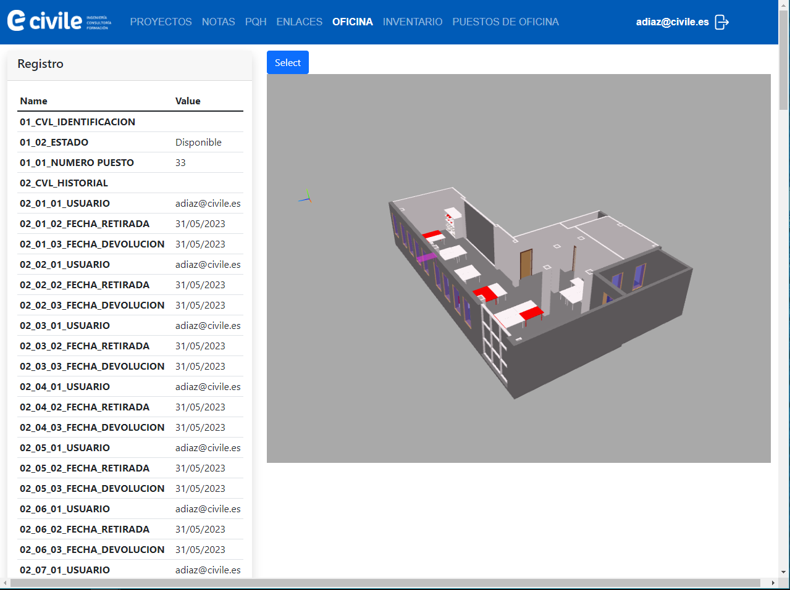
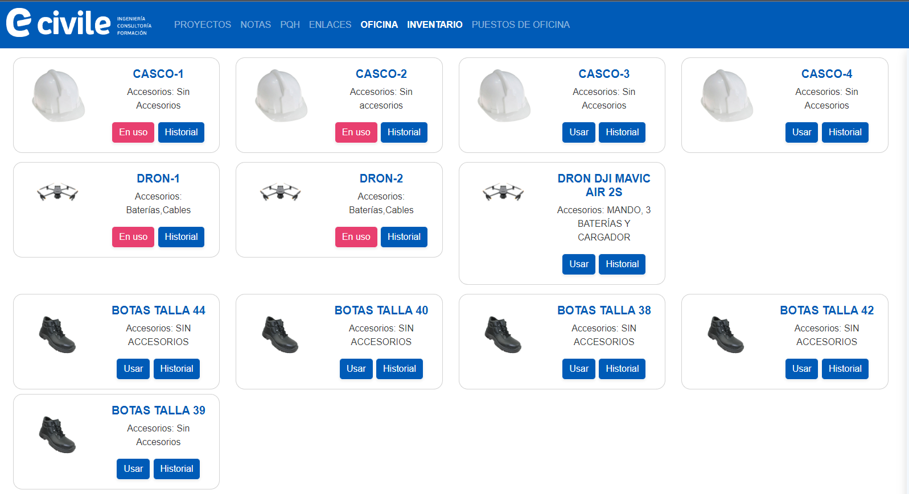

El proyecto del gemelo digital de la oficina es el proyecto más complicado que hecho hasta ahora ya que combina muchas tecnologías:
Backend: Servidor ubuntu con nginx. La respuesta del servidor está programada con el framework Django.
Frontend: HTML, CSS y Javascript.
Lo complicado de este proyecto es que muestra en tiempo real el estado de la oficina en un modelo BIM que se visualiza gracias a IFC.js. ¡Te lo explico!
Te presento el visor IFC, con la tecnología de That Open Company (anteriormente conocido como Ifc.js). En este visor se puede ver el estado de la oficina de Civile.

Uilizar la librería de TOC es tan sencillo que incluso en esta página web, puedo incluir un visor IFC de un modelo sencillo. Sin ninguna tecnología extra detrás
El visor de Civile contiene los activos materiales en los que estamos interesado conocer su estado: desde puestos físicos hasta equipamiento de obra. Este modelo IFC está alojado en el servidor y es alimentado por una serie de programas hechos en python. Los usuarios entran en esta web.

Aquí pueden ver que activos pueden reservar e incluso el historial de uso. Los usuarios reservan un activo y automáticamente los programas de python empiezan a trabajar. Trasladan esta información al modelo IFC por lo que en cuestión de segundos queda registrado en el sistema quien ha cogido el activo y la fecha. También, el objeto se muestra como no disponible cambiando su color a rojo.
Te dejo un vídeo de mi Linkedin donde muestro su funcionamiento.